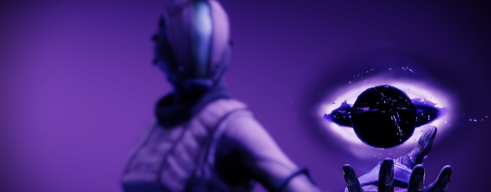
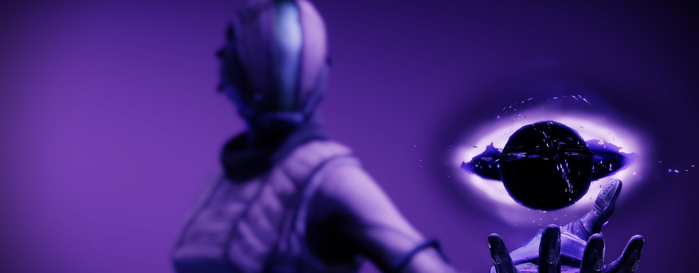

L'Arcaniste
Guerriers érudits de la Lumière, les Arcanistes se dévouent à l'étude du Voyageur et de ses pouvoirs. L'esprit d'un Arcaniste regorge de terribles secrets, et vacille entre génie indéniable et folie véritable. Sur le champ de bataille, ces mystères redoutables pourraient faire éclater la réalité elle-même
« L'espace définit la forme. La pause avant la note, le souffle avant le mot, l'espace vide sur la page. »
Un courant d'air se fit sentir et je levai les yeux de mes recherches. L'atmosphère était anormalement tranquille, comme le calme avant la tempête. Une embuscade m'attendait, j'en étais certaine. Pas le temps de me demander comment mes défenses avaient échoué. Pas le temps de réfléchir à comment ils avaient trouvé ma bibliothèque cachée. Je venais à peine de lire ces mots clairvoyants sur l'Abysse. Maintenant, je devais m'y aventurer en espérant ne pas tomber à travers.
« Emparez-vous d'elle », lança le chef des Maraudeurs d'une voix tonnante. Des ennemis déterminés à me détruire fracassèrent toutes les fenêtres pour entrer. J'eus l'impression que le temps avait ralenti. En un clin d'œil, j'étais entrée dans la mêlée. Une gueule céleste béante drainait leur vie. Je trouvai mon équilibre : la puissance de l'Abysse était manifeste, pourtant ce n'était pas là sa pleine nature.
L'instant suivant, la réalité repris son rythme normal. J'étais à nouveau seule. Les intrus n'avaient même pas eu le temps de réaliser ce qui leur arrivait. Moi-même, je n'étais pas sûre de comprendre, mais j'avais découvert une vérité fondamentale.
Un pas vers l'Abysse est un pas vers un néant capable d'en soutenir le poids.
Voie abyssale
Bombe nova: Vortex
Projetez une décharge de Lumière abyssale sur la cible et désintégrez tous les ennemis pris dans l'explosion. La Bombe nova crée une singularité qui attire les cibles vers l'intérieur et blesse en continu celles qui sont piégées dedans.
Distorsion nova
Voyagez entre les dimensions pour subvertir les lois de la physique. Vous vous téléporter sur une courte distance pour relâcher une éruption abyssale mortelle.
Bombe nova: Cataclysme
Projetez une décharge de Lumière abyssale sur la cible et désintégrez tous les ennemis pris dans l'explosion. La Bombe nova se déplace lentement et cherche les cibles. Les détonations se dispersent en projectiles chercheurs plus petits.
- Grenades